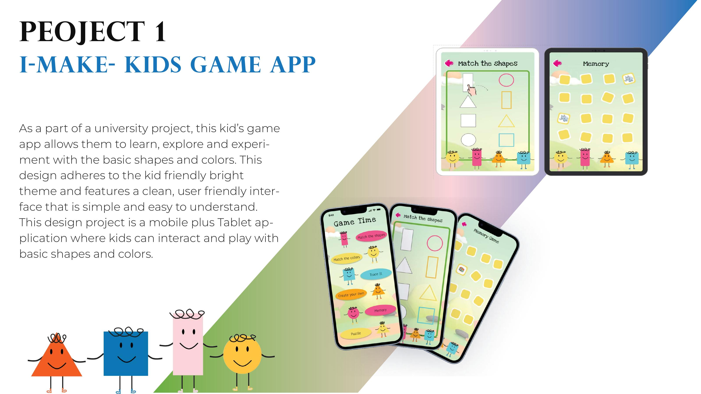
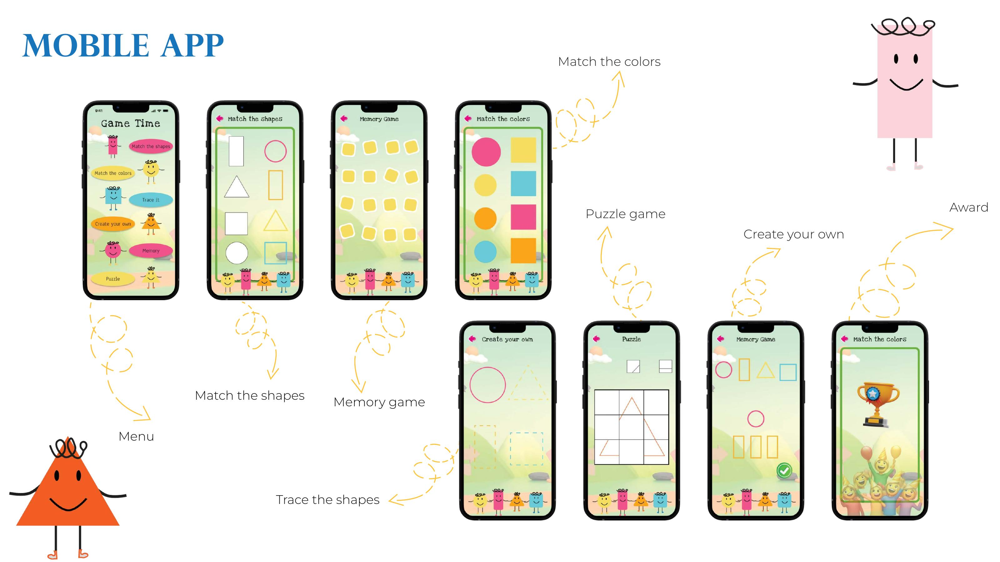
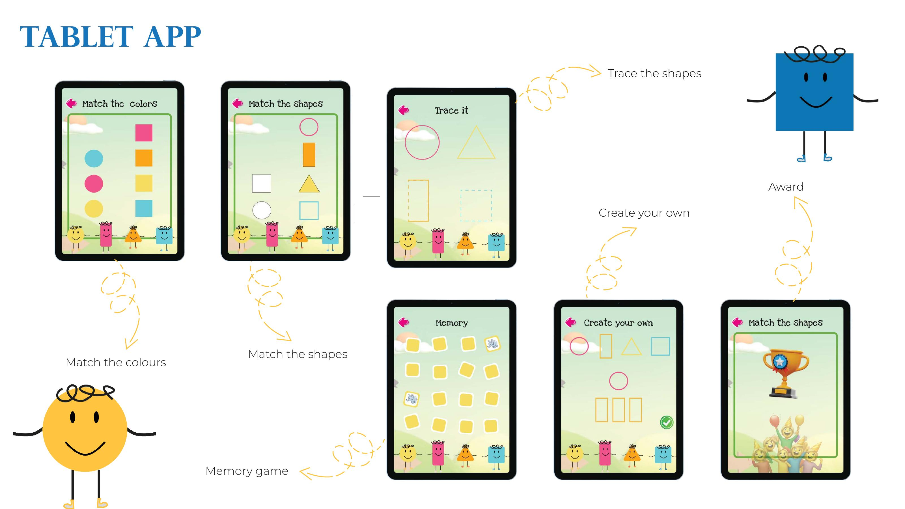

Academic Project / Mobile & Tablet App
I-Make
A kid-friendly learning app for shapes and colours — designed for mobile and tablet.

Overview
Learning through play
As part of a university project, I-Make is a kid's game app that allows children to learn, explore and experiment with basic shapes and colours. The design adheres to a kid-friendly bright theme and features a clean, user-friendly interface that is simple and easy to understand.
The app is available on both mobile and tablet, where kids can interact and play with basic shapes and colours through a range of activities.
Scope
Activities designed
Mobile Application
Seven screens, one flow
The mobile app covers the full game menu and all six activities. Each activity screen maintains a consistent layout — game area at top, friendly character row at the bottom — keeping the interface predictable for young users.

Mobile app — activity screens
Tablet Application
Adapted for larger screens
The tablet version adapts the same activities to a wider canvas, giving more visual space for matching and tracing activities. The layout is optimised for landscape orientation with the same friendly visual language throughout.

Tablet app — activity screens
Academic project — visuals are from the original portfolio PDF. Research methods, testing outcomes, and project duration are not documented in the source material and have not been added.
Next Project
Evolve — Gym Display